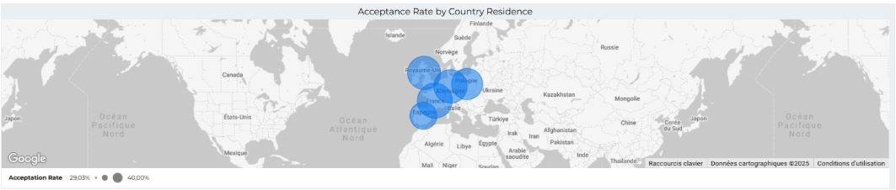

Dashboard KYC/KYB - Monitoring Temps Réel
Looker Studio • Conformité • Suivi SLA
Toutes les données sont fictives à des fins de démonstration. Ce projet illustre le type de dashboard KYC/KYB créé lors de mon expérience chez Mangopay.
üéØ Contexte & Objectif
Challenge : Manque de visibilité temps réel sur les processus de validation KYC/KYB, causant retards et risques de conformité.
Solution : Dashboard Looker interactif avec 2 onglets suivant volumes, taux d'acceptation, temps de traitement et conformité SLA (seuil 36h).
üîó Dashboard : Voir le Dashboard Live
üìä M√©triques Cl√©s
Onglet 1 : Vue d'Ensemble KPIs
Suivi temps réel des volumes de documents, taux d'acceptation, répartition des statuts (Validé, Refusé, En attente) et tendances mensuelles par client.
Impact : Visibilité instantanée sur la santé du processus, détection des goulets d'étranglement et écarts de performance par client.
Onglet 2 : Analyse Temps de Traitement
Monitoring des temps de traitement moyens vs. SLA (36h), identification des clients dépassant les seuils et suivi des retards de soumission.

Impact : Détection précoce des dépassements SLA, priorisation des cas à risque et optimisation de l'allocation des ressources.
Performance Géographique
Le taux d'acceptation varie fortement par pays (certains en dessous de 30%), révélant des défis régionaux nécessitant des améliorations ciblées.
Besoin d'un Dashboard Conformité ?
Je peux concevoir des dashboards KYC/KYB ou conformité sur-mesure avec monitoring temps réel et alertes automatisées.
Me Contacter